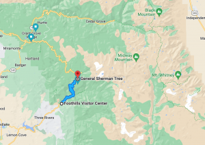
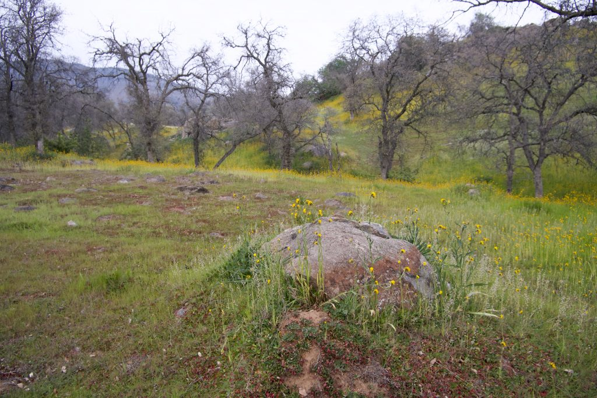
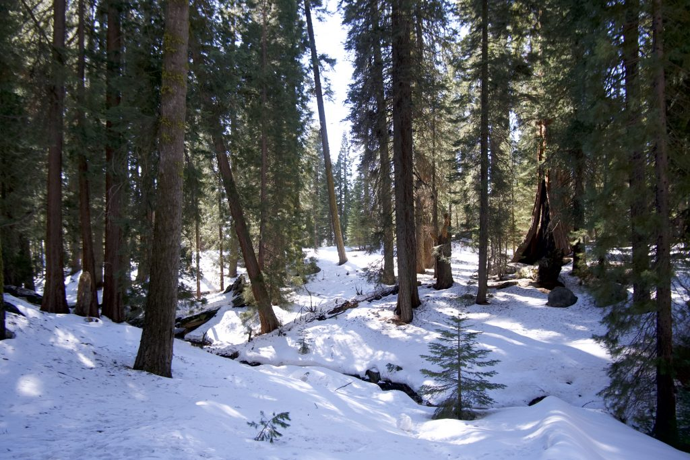
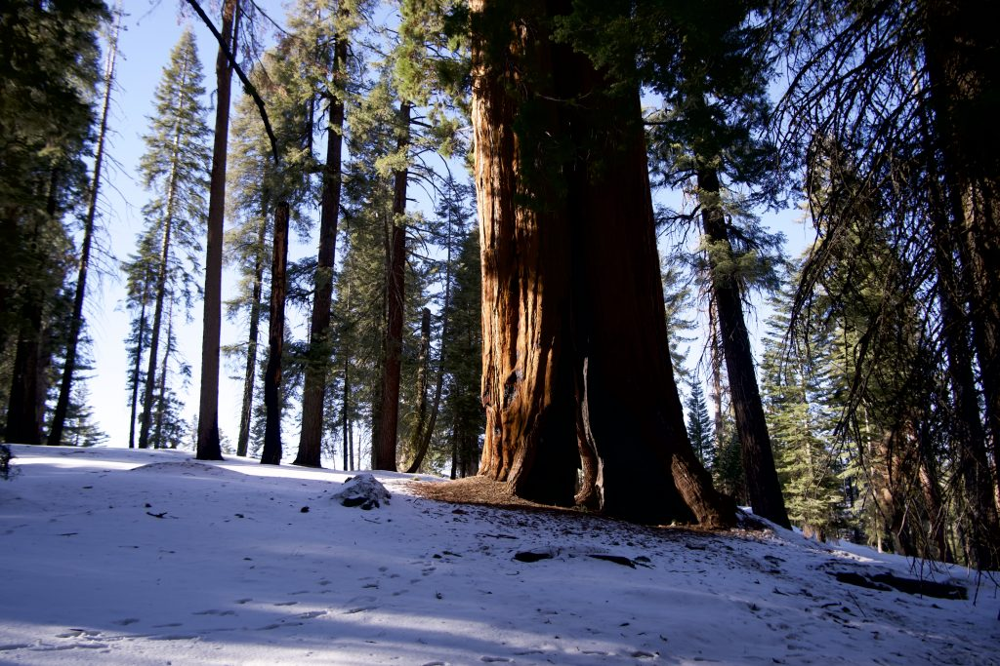
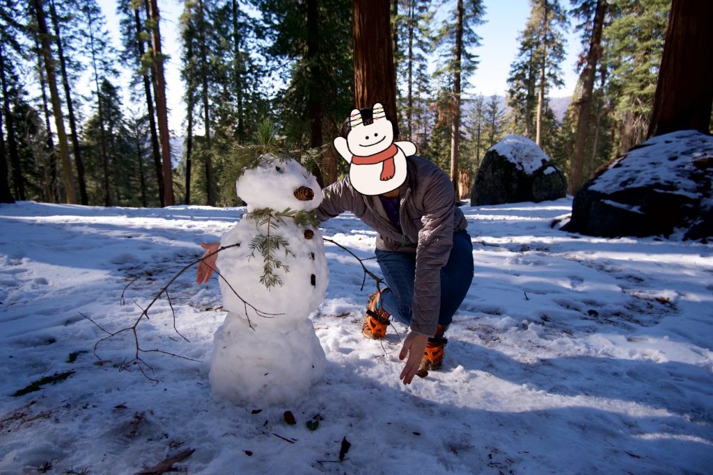
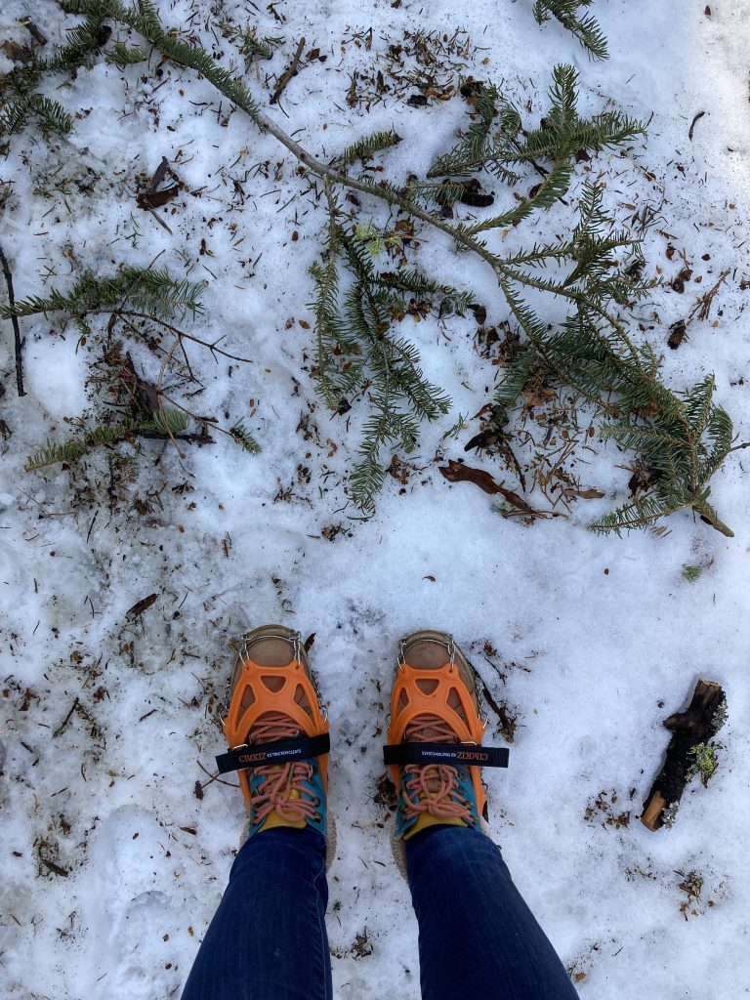
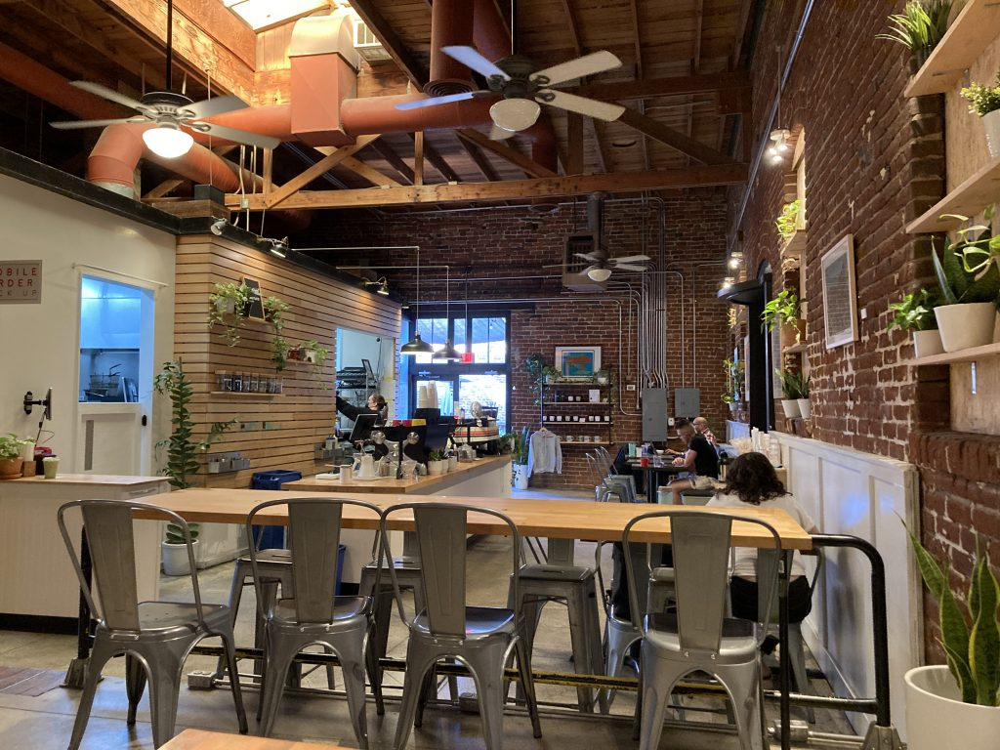
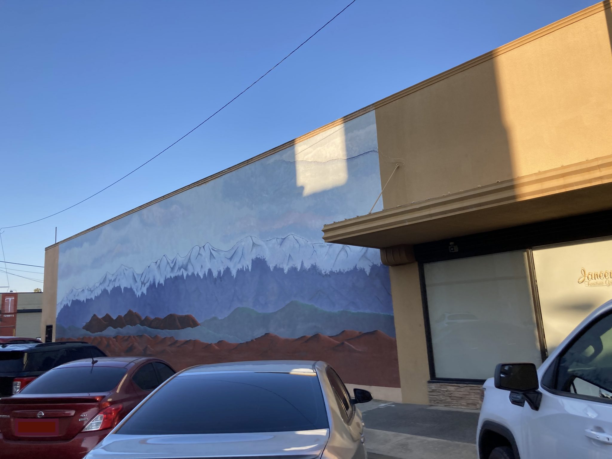

二月的小长假，出去玩一趟就像做一个深呼吸，长吸一口气才有勇气面对下一个公休假前一百多天的工作日。Sequoia & Kings Canyon National Park开车大概四个小时，不算太远，正适合长周末短途出行。虽然冬天不能去很多长一点的徒步路线，但是可以看到雪中的红杉也不错。
Sequoia和Kings Canyon其实是两个公园，中间有一条Generals Highway公路连通，冬天因为积雪会封路。如果两个公园都想去的话最好至少安排两天，不然光是往返两个公园路上的时间也要两个小时以上。公园里的小木屋冬天都不开，我们这次选择住在公园外面的小城Visalia，距离两个公园的入口大概都是1小时左右的车程。如果只准备去Sequoia的话也可以住到离那边入口更近的Three Rivers，有一些motel也有不少吃饭的店。Visalia是个以农业为主的加州中部小城，天气好的时候可以看到Sierra Nevada的雪山。城外是成片成片的果树，现在正是橙子丰收的季节，一路上每棵树上都挂得满满当当的，让我有种这果树也太好种了吧的错觉。路上还看到好多蜜蜂的箱子，应该是给正在花季的树授粉的。除了果树，Visalia给我印象最深的是一家咖啡店和贡茶。咖啡店本身非常棒，但是它的气质在小城一派连锁开餐店的包围下显得特别跳脱。贡茶嘛，毕竟这是我第一次在国家公园那么附近喝到奶茶 （因为国家公园一般都在前不着村后不着店的地方），不得不说奶茶的影响力不一般啊。
Sequoia 是美国第二个建立的国家公园（第一个是黄石），没想到居然比优胜美地早，这还让我挺惊讶的，毕竟优胜美地的名气要大很多。公园位于Sierra Nevada山脉的西南部，美国下48州最高的山峰 (Mt Whitney) 也在这里。但是如果想看Whitney峰的话最好还是去东面的395公路，因为公园的路位于西侧，从这边看过去会被Great Western Divide那一组山峰挡住。
公园里最有名的是一棵叫General Sherman的红杉树，它是世界上最大的树（按体积算）。美国这边红杉主要分两种，coastal redwood和sequoia。Coastal redwood主要分布在加州北部沿海地区，能长到的高度会比 sequoia更高，但是平均寿命没有sequioa长。Sequoia主要生长在加州中南部内陆地区。
冬天游Sequoia特别简单，主要开放的景点都在198公路的沿线。因为去年有非常大的山火，很多林区都还在恢复期，所以198公路从Foothills Visitor Center 到Wolverton那一段只有周五到周一开放。General Sherman也在那一段路上。如果准备来的话最好提前看一下公园的推特，公园会在上面更新最新的开放情况。

虽然说General Sherman名气最大，但其实那附近还有很多同样高龄的参天大树。我们去走了附近的congress trail, 总共2 miles左右的一个loop。Trail很平缓，基本没有什么爬升，但是因为有积雪，走起来会比较滑，如果是冬天来的话最好戴上冰爪。这是我第一次在雪地里徒步，来之前还犹豫了下要不要买冰爪。带来之后一开始有犹豫要不要穿，别的游客都很少有穿的，有点担心自己是不是太小题大做了。真的走到trail上了感觉有冰爪实在太好了。看着别人在雪地里小心翼翼走一步滑三步，我踩着冰爪健步如飞还能跑起来，哈哈。
别看红杉树长得高大壮实，但其实它的根系非常浅。为了保护这些树，trail外拦起来的区域是不可以走进去的。如果想要玩雪的话可以去指定的snowplay区，一般都是空旷的草坡。我们去的时候看到很多家庭带着孩子在雪里玩得不亦乐乎。
Kings canyon在sequoia的西北面，前身是Grant Grove National Park，后来扩大了范围把附近几个别的canyon合并进来了。Kings Canyon和Sequoia是合并管理的，所以只需要买一次门票，七天内可以多次进出两个公园。个人感觉Kings canyon其实不太适合冬天来，因为封路不能下到谷底，也就看不到湖和壮观的花岗岩。我们这次去的时候还碰上了controlled burning，就是在有消防部门控制的情况下在划定的林区内的小型山火。目的是为了清除过密的植被，帮助更新森林，也预防日后发生严重山火的可能。所以空气并不太好，烟尘有点重。但是如果因为天气原因没有办法去到Sequoia的话倒是可以来这里看一下世界上第二大的树General Grant。从山外到Grant Grove这一段的路是全年开放的。General Grant还有个称号是National Christmas Tree，每年圣诞都会有人组织来树下举行庆祝仪式。
=============简易的照片分割线==============







